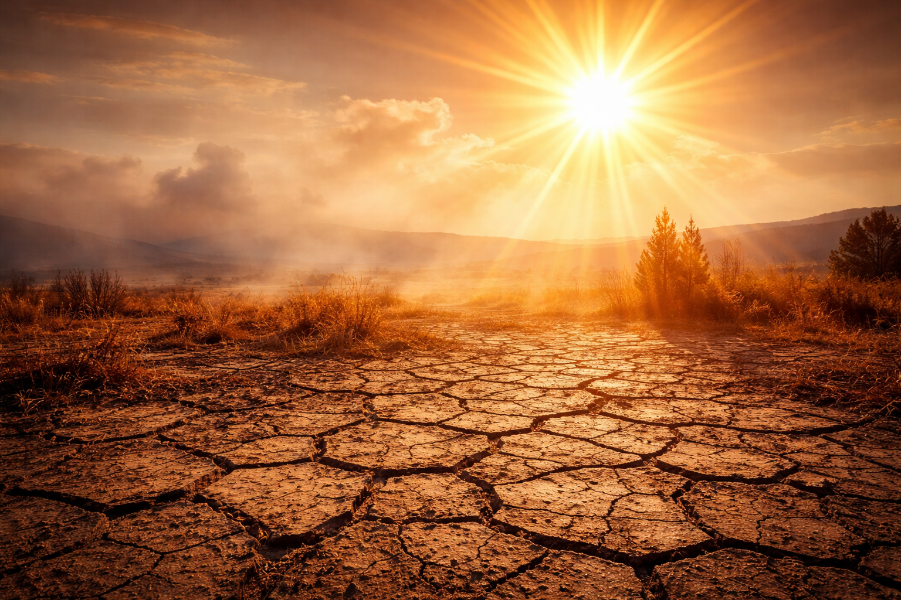
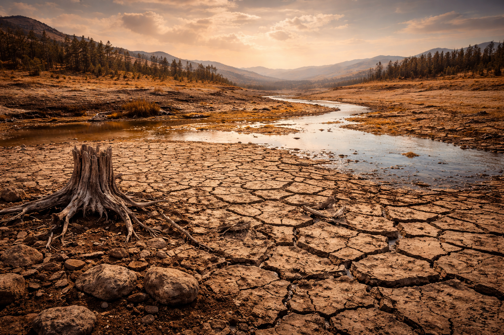
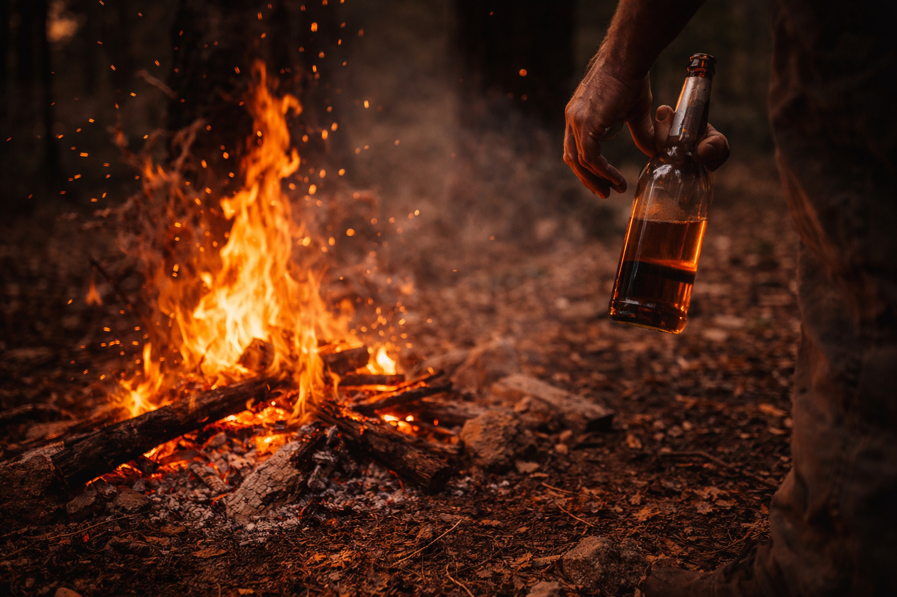
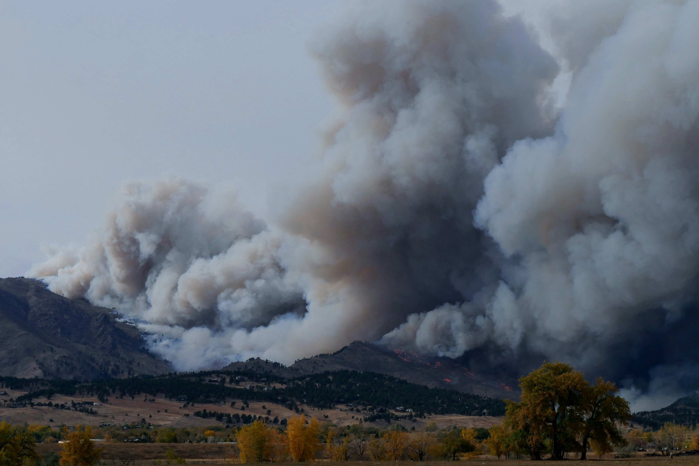
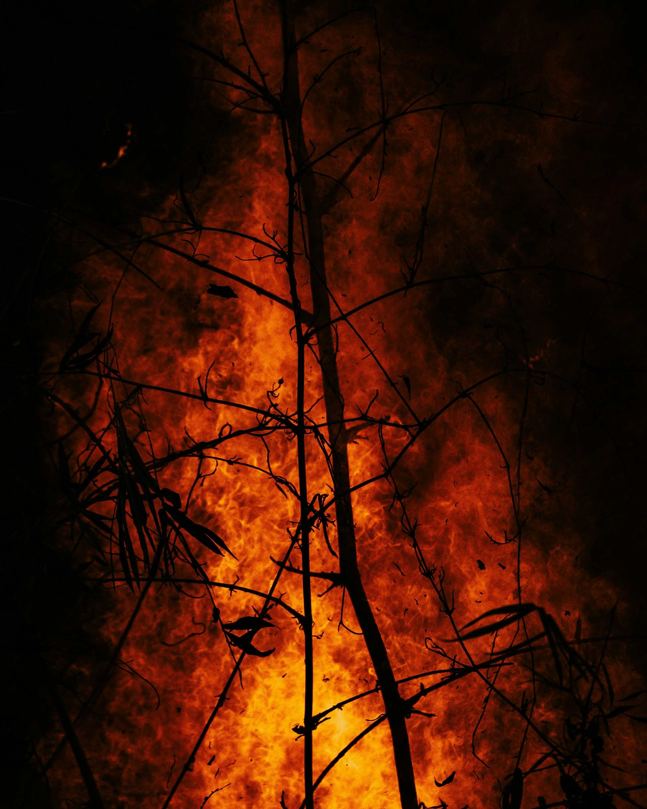
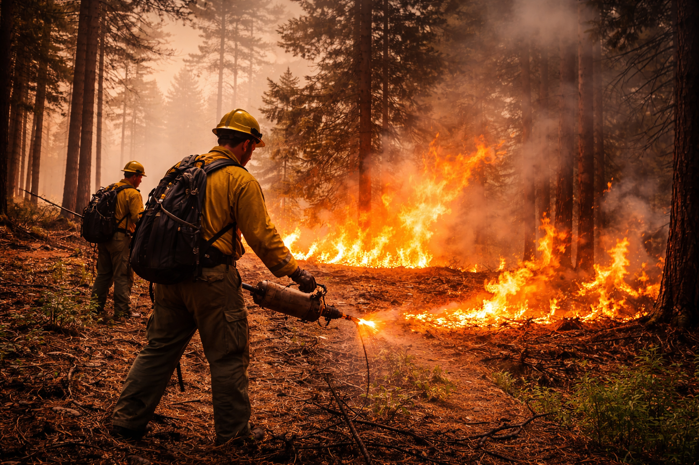
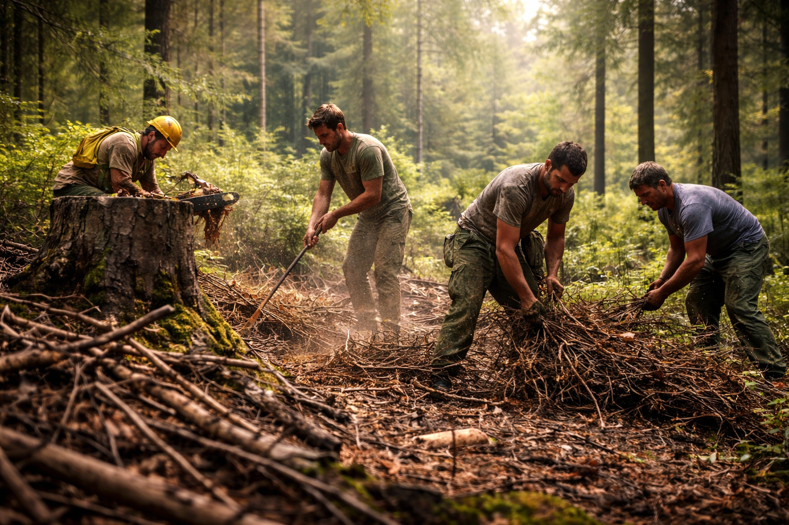
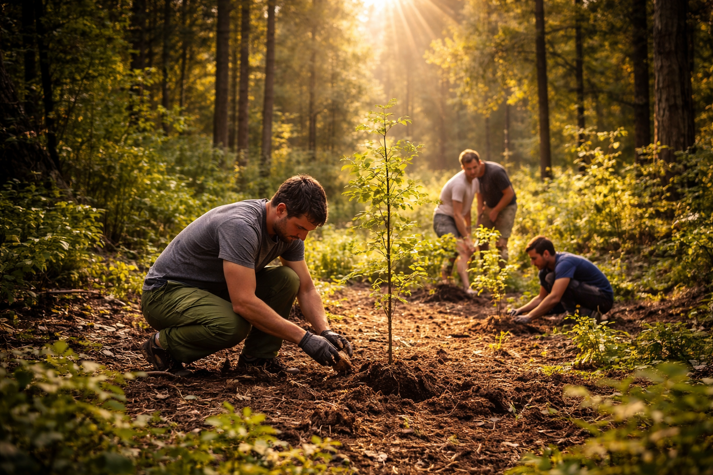

Hotter Temperatures
Extreme heat dries vegetation and increases fire risk.
Climate Crisis Project
Rising temperatures, drought, and human activity are making wildfires more destructive across the world.
Explore
Extreme heat dries vegetation and increases fire risk.

Dry land and lack of water make forests easier to burn.

Campfires, cigarettes, and accidents cause many wildfires.

Smoke spreads harmful particles across large regions.

Wildlife loses shelter, food, and safe habitats after fires.

Wildfires can permanently damage ecosystems and soil.

Planned fires reduce fuel and help prevent larger disasters.

Clearing dry brush and debris lowers wildfire intensity.

Reducing emissions helps prevent extreme wildfire conditions.